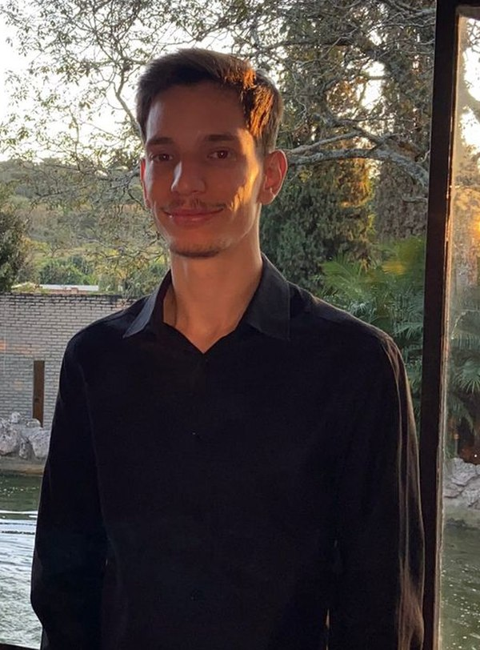

Leonardo Lamin|
Desenvolvedor .NET, atualmente construindo e mantendo sistemas de provisionamento automatizado — orquestração entre serviços, integração com Active Directory e bancos de dados relacionais.
Estudante de Engenharia de Software na Universidade Católica de Santa Catarina, conciliando teoria acadêmica com problemas reais de produção: encoding, concorrência, logs, deploy.
Prefere depurar com base em evidência — log antes de suposição — e entregar em ciclos curtos e incrementais.
Início formal na programação — fundamentos de front-end (HTML/CSS/JS) e um sistema completo de gestão comercial em Java como projeto de curso.
Automatizei pipeline de KPIs em C#, eliminando 100% da entrada manual de dados. Entrega mensal de dashboards em Power BI e Looker Studio para diretoria.
Ingresso na Universidade Católica de Santa Catarina, conciliando graduação com atuação profissional em produção.
Reduzi em ~84% o tempo de provisionamento de usuários SaaS (45→7 min) e expandi acesso a dados de clientes em +400% com nova aplicação web e API REST.
Conciliando graduação e atuação profissional, buscando posição .NET Júnior com foco em boas práticas e escalabilidade.
Plataforma .NET com orquestrador e serviço distribuído para automatizar a criação de usuários e integração com Active Directory, substituindo um processo manual sujeito a erro humano.
Automatizei em C# o envio de dados para KPIs de atendimento, eliminando 100% da entrada manual e entregando dashboards mensais em Power BI para a diretoria.
Plataforma de rede social construída do zero: autenticação, feed de publicações e interações, com arquitetura MVC em Node.js e EJS.
Sistema completo para comércio: comandas e pedidos, controle de estoque, fluxo de caixa, leitura de código de barras e relatórios gerenciais, integrado a um banco MySQL centralizado.
O próprio portfólio: uma peça viva de front-end, construída do zero em HTML, CSS e JavaScript puro — sem frameworks.
Desenvolvi um software MVC com microsserviços, integração nativa ao Active Directory e Windows Forms (.NET), reduzindo o tempo de provisionamento de usuários de 30–45 minutos para 7 minutos — um ganho de aproximadamente 84%, beneficiando 25 a 30 usuários por mês.
Entre os desafios técnicos resolvidos: inconsistência de codificação de caracteres entre o arquivo de configuração e o restante do pipeline, uma lógica de backup que não detectava registros duplicados corretamente, e um ponto de sobrescrita de dados posicionado no lugar errado no serviço. Também mapeei que um erro de identidade não mapeada era uma questão operacional — o usuário de rede precisa existir previamente — não um defeito de código.
No mesmo ambiente, desenvolvi do zero uma aplicação web com API REST que expandiu o acesso a dados de clientes de 4 para 20 usuários (+400%), centralizando informações antes restritas ao servidor, e um dashboard em tempo real (Supabase/PostgreSQL) que reduziu consultas de apuração de ponto de 7–15 minutos para acesso instantâneo, atendendo mais de 1.000 clientes.
public async Task<ProvisioningResult> CreateUserAsync(ProvisioningRequest request)
{
if (string.IsNullOrWhiteSpace(request.NetworkId))
throw new ArgumentException("Network ID é obrigatório.", nameof(request));
_logger.LogInformation("Iniciando provisionamento para {NetworkId}", request.NetworkId);
if (await _directory.UserExistsAsync(request.NetworkId))
{
_logger.LogWarning("Usuário {NetworkId} já existe — abortando.", request.NetworkId);
return ProvisioningResult.Skipped(request.NetworkId);
}
try
{
await _directory.CreateUserAsync(request);
_logger.LogInformation("Usuário {NetworkId} provisionado com sucesso.", request.NetworkId);
return ProvisioningResult.Success(request.NetworkId);
}
catch (DirectoryOperationException ex)
{
_logger.LogError(ex, "Falha ao provisionar {NetworkId}", request.NetworkId);
throw;
}
}Na SZ Soluções, o envio de dados para os indicadores de atendimento era feito manualmente — processo lento e sujeito a falhas humanas. Automatizei todo o pipeline em C#, eliminando 100% da entrada manual de dados e garantindo atualização contínua dos indicadores sem intervenção humana.
Com os dados já consolidados automaticamente, passei a entregar mensalmente dashboards em Power BI e Looker Studio — médias, volumes e SLAs — diretamente para a gestão e diretoria da empresa contratante.
Também executei queries SQL/MySQL para extração e validação de dados em investigações técnicas, auditorias de SLA e suporte especializado no ERP TOTVS Datasul.
Plataforma de rede social construída do zero, com autenticação de usuários, feed de publicações e interações entre usuários — arquitetura MVC com Node.js e templates EJS.
Modelei os relacionamentos entre usuários, posts e conexões usando Sequelize ORM sobre banco MySQL, separando claramente a camada de acesso a dados da lógica de negócio — mesma disciplina de arquitetura que aplico em produção com .NET.
Projeto pessoal desenvolvido de ponta a ponta: modelagem de dados, autenticação, rotas, views e persistência — sem starter kits ou boilerplates prontos.
Desenvolvido durante o curso técnico no SENAI (2022–2024), este sistema cobre o fluxo operacional completo de um pequeno comércio: abertura e fechamento de comandas/pedidos, controle de estoque, fluxo de caixa e emissão de relatórios gerenciais para apoiar decisões do dia a dia.
Um dos pontos técnicos mais interessantes foi a integração de leitura de código de barras ao fluxo de vendas, permitindo lançamento rápido de itens e baixa automática no estoque — tudo persistido em um banco MySQL centralizado, garantindo que comandas, estoque e caixa nunca ficassem dessincronizados.
O projeto foi construído com JavaScript e PHP no back-end, refletindo minha entrada no desenvolvimento antes de migrar o foco principal para .NET — uma base que ajuda a entender diferentes ecossistemas de servidor.
O portfólio que você está usando agora é a prova de front-end — não uma descrição dela. Construído do zero, sem frameworks: HTML, CSS e JavaScript puro, com foco em performance e em técnicas modernas de plataforma web.
O conceito de "galeria" guiou cada decisão: entrada em perspectiva 3D, transição de cor ligada ao scroll, casos de projeto que abrem em tela cheia com morph nativo via View Transitions API, e uma trilha horizontal de projetos com revelação progressiva via Intersection Observer.
Inclui sistema de tradução PT/EN próprio, modo condensado para recrutadores, suporte a prefers-reduced-motion e estados de foco visíveis — acessibilidade não foi tratada como opcional.
"Escreva aqui uma recomendação real de um professor, colega ou gestor."
Nome — Cargo/Relação placeholder — substitua por um depoimento real"Uma segunda recomendação, se tiver disponível, reforça a credibilidade."
Nome — Cargo/Relação placeholder — substitua por um depoimento realSem formulário, sem fricção. Escolha o canal e fale direto comigo.
Desenvolvedor .NET · Estudante de Engenharia de Software — UNISC
Desenvolvedor .NET focado em sistemas de provisionamento automatizado — orquestração de serviços, integração com Active Directory e bancos relacionais. Debug orientado a evidência (log antes de suposição), entrega em ciclos curtos.